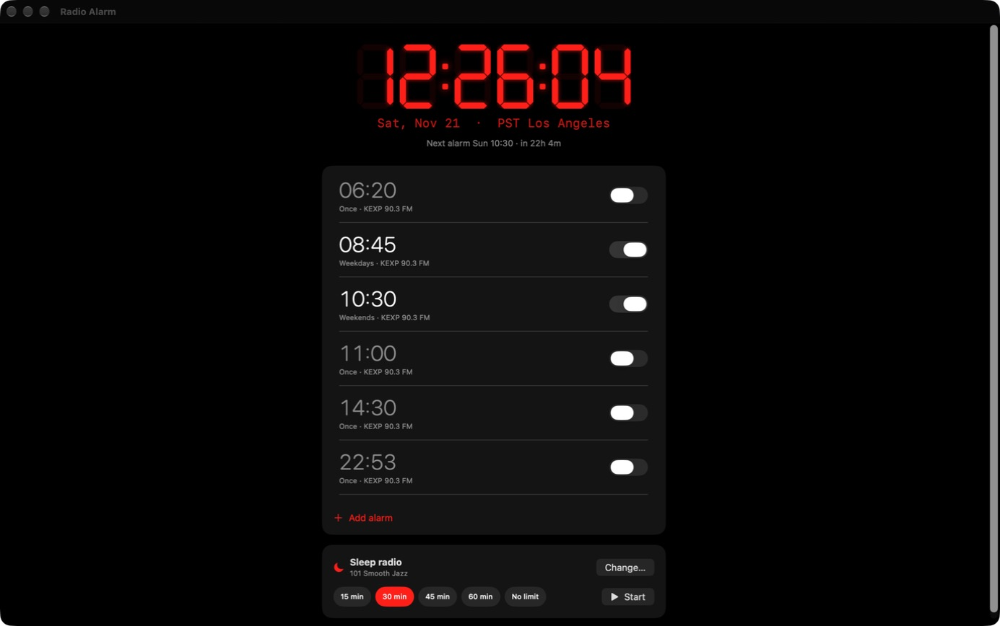

RADIO ALARM
A free Mac alarm clock that wakes you up with live radio.
Free and open source (MIT). macOS 14 or later, Apple Silicon.

Features
- Any radio station. Presets plus search across thousands of stations from radio-browser.info.
- Gentle wake-up. The volume rises step by step and is put back afterwards.
- Always out loud. Rings on the Mac's speakers even with AirPods connected.
- Backup sound if you're offline or the station is down.
- Repeating or one-time alarms, per-alarm snooze, and Skip next.
- Swipe right to pin, left to delete or skip.
- Sleep radio that fades out after 15–60 minutes.
- Hard to miss by accident: lives in the menu bar, asks before quitting, and reopens itself 5 minutes before an alarm if it was quit.
Install
- Download
RadioAlarm.zipand drag RadioAlarm.app into Applications. - Open it. macOS blocks it the first time because the app isn't notarized by Apple.
- Go to System Settings → Privacy & Security and click Open Anyway.
Keep your Mac awake
The alarm only rings while the Mac is awake and you're logged in.
Closing the lid puts the Mac to sleep and the alarm won't ring.